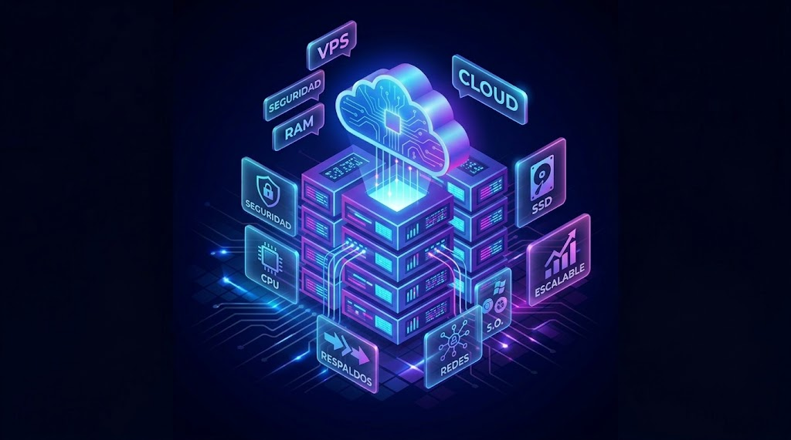
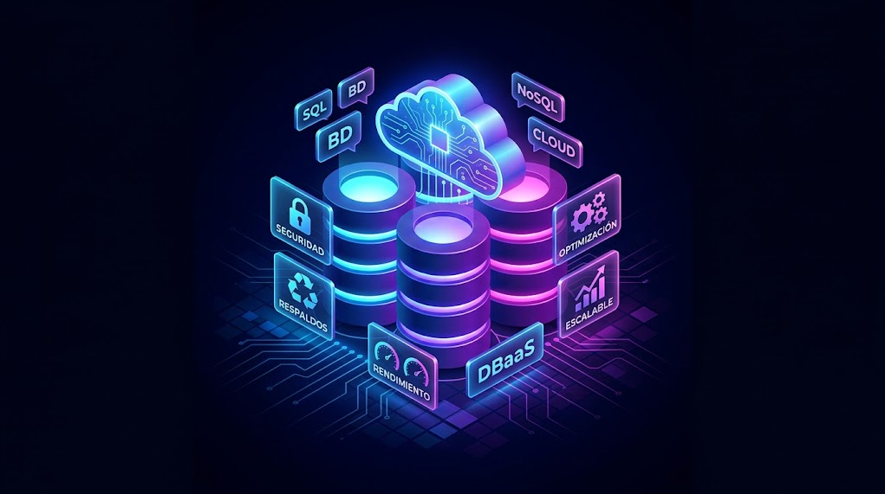
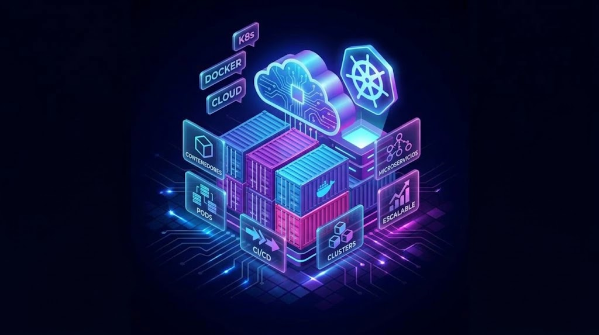
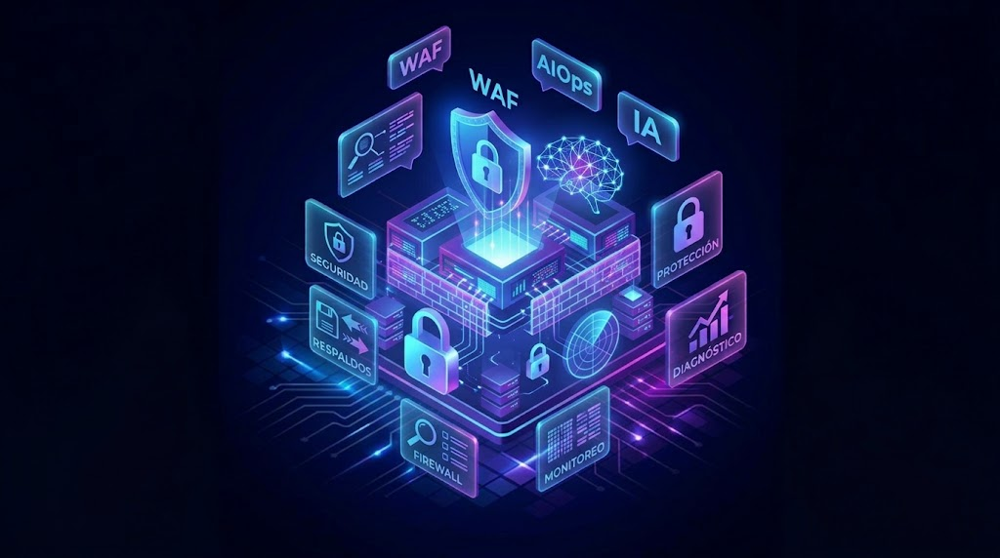

1. Servidores VPS
Maquinas virtuales linux y windows de alto rendimiento con alamacenamiento NVMe.
En USO CLOUD garantizamos tu disponibilidad (Uptime), potenciamos tu infraestructura (Server) y automatizamos tu despliegue (Operaciones).

Maquinas virtuales linux y windows de alto rendimiento con alamacenamiento NVMe.

Motores relacionales y en memoria listos para producción con respaldos automáticos.

Despliega tus microservicios en Docker y clusters Kubernetes sin fricción.

Protección WAF, respaldos y diagnóstico inteligente de logs mediante IA.